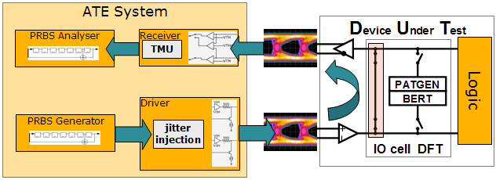
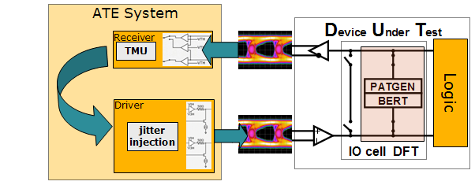
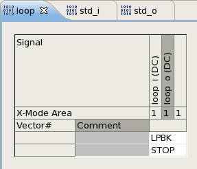
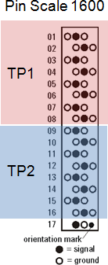

PS1600 SmartLoop: loopback testing
In loopback testing you combine two channels (four channels in differential mode) to create a loop.
Loopback testing requires a complete timing setup (X8 mode assumed, unless differently specified), although with a special simplified syntax. It does not require special pin types or pin modes. You can use every normal I, O, or IO pin. But output and input channels of a loop must belong to the same test processor. For the level setup, loopback pins are handled like normal pins.
Loopback testing differentiates between two modes:
- Internal loopback mode (ILM), where data is driven by the test system, looped back
inside the device, and received by the test system.
This data can be sourced by classical patterns, compliance pattern, or hardware based PRBS sequences.
- SmartLoop™ (external loop back mode -
ELM).
The data is driven by the device, captured and looped back by the test system, and finally received and compared in the DUT.
Because of the internal signal processing there is a fixed loop latency of 3816 tester cycles.
While generic patterns are enabled by proper memory and speed licenses, the SmartLoop™, hardware PRBS and compliance patterns are enabled by the PHY test bundle license.
Internal loopback mode (ILM)
For the ILM, the card provides, for example, PRBS generators as a data source and PRBS analyzers for pattern synchronization and error count. The jitter injection allows for timing stress of the receiver of the device. Level stress can be applied by level programming.

SmartLoop™ - external loopback mode (ELM)
For the ELM, the card provides an internal feed through, with the option to apply level stress (drive level controls) and timing stress (jitter injection) to the output signal. On the receiver side, the signal can be analyzed by adding controls to the receive threshold (swing) and strobe point (timing, jitter).

To start a pattern‑based SmartLoop loopback test you use the LPBK sequencer instruction.

The SmartLoop™ loopback scheme
Loopback pins must belong to the same test processor (TP).
The loopback scheme on the PS1600 standard pogo block is as follows:
 |
|
License overview
Loopback functionality is available with the N5865UPRM license.
For an overview of all licensed V93000 products by Product ID, as they are referenced on the Entitlement Certificates, see Licensed V93000 products.
Functional changes
- Introduced in SmarTest 7.1.0
- SmarTest 7.3.2: Support of PS1600B